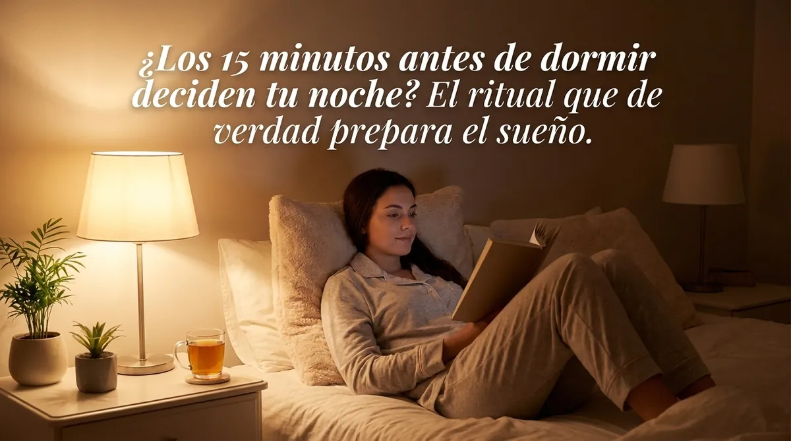
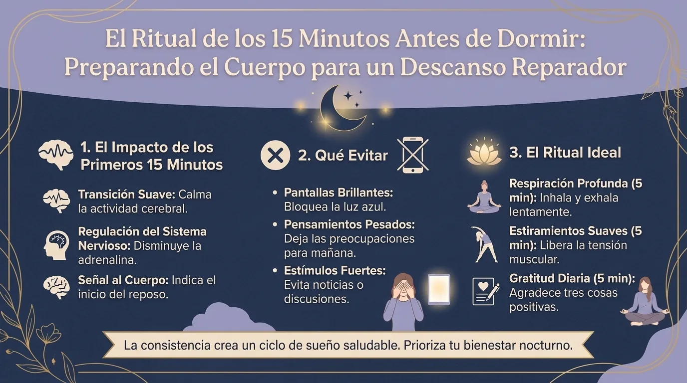

Higiene del sueño y rutina antes de dormir: el ritual de 15 minutos que de verdad prepara la noche

Higiene del sueño: 15 minutos para bajar la estimulación, vaciar la cabeza y usar el cuerpo como interruptor. Y por qué todo empieza por la mañana.
¿Sirve de algo una rutina antes de dormir?
Sí, aunque no decide toda tu noche: le indica a tu cerebro que el día se acaba.
Imagina dos escenarios. En el primero, terminas una conversación de trabajo tensa a las 23:42, revisas las noticias, ves tres vídeos, contestas un mensaje, descubres de repente que un actor del que no te acordabas desde 2009 se ha divorciado, decides, como es lógico, que esa información merece una investigación a fondo, y luego sueltas el móvil y le exiges a tu cerebro que pase en el acto del modo «información, luz, emoción, decisión» al modo «sueño profundo». En el segundo, los últimos quince a treinta minutos son previsibles, con poca luz, tranquilos y repetitivos, y tu organismo va recibiendo poco a poco una serie de pistas de que el día se está acabando.
El segundo escenario, claro está, no garantiza ocho horas de sueño perfecto.
El sueño depende de muchos factores:
- la presión homeostática;
- el ritmo circadiano;
- la luz;
- la temperatura;
- el estrés;
- la actividad física;
- la cafeína;
- el alcohol;
- los medicamentos;
- la salud;
- el entorno.
Sería, por tanto, científicamente absurdo afirmar que los quince minutos antes de acostarte determinan toda la noche, pero sí son una ventana de comportamiento excelente para crear una transición regular entre la actividad y el descanso.
De hecho, la verdadera prioridad va más allá de ese cuarto de hora: levantarte a una hora más o menos fija, exponerte a la luz adecuada durante el día y mantener hábitos coherentes suelen influir más que un ritual sofisticado justo antes de dormir.
Dicho de otro modo, los últimos quince minutos no son el único director de orquesta de tu sueño.
Son más bien los créditos finales.
Y unos buenos créditos ayudan al cerebro a entender que la película ha terminado.
¿Por qué el móvil puede quitarte el sueño?
Las pantallas se han convertido en el villano oficial del sueño, pero la realidad es más interesante que el eslogan «luz azul = insomnio», porque un smartphone puede sabotear la hora de dormir por varias vías a la vez: la exposición a la luz, el retraso voluntario de la hora de acostarte, la estimulación mental, las emociones, las notificaciones y la asombrosa capacidad de internet para convertir «solo miro una cosa» en cuarenta y siete minutos más de contenido.
La luz por la noche puede influir en el sistema circadiano y en la secreción de melatonina, sobre todo cuando es lo bastante intensa y prolongada, pero la respuesta depende, entre otras cosas, de la intensidad, el espectro, la duración y el momento de la exposición.
Así que la estrategia más sensata no es necesariamente entrar en pánico porque miraste la hora en el móvil a las 22:51.
Consiste en ir reduciendo poco a poco:
- el brillo;
- los contenidos que te remueven emocionalmente;
- el trabajo;
- las notificaciones;
- el scroll infinito.
Durante los últimos quince minutos, lo ideal es dejar el móvil fuera de tu alcance inmediato, bajar la luz y elegir una actividad que tenga un final natural.
Unas cuantas páginas de un libro tienen final.
Lavarte los dientes tiene final.
Preparar la ropa del día siguiente tiene final.
Un feed de noticias no lo tiene.
En teoría, tu pulgar podría seguir haciendo scroll hasta la jubilación.
¿Qué hacer con los pensamientos que no te dejan dormir?
Vacíalos sobre el papel unos diez minutos antes de acostarte.
Uno de los grandes enemigos de la hora de dormir es ese cerebro que, de repente, se acuerda de todo.
«Tengo que mandar ese documento».
«Comprar pasta de dientes».
«¿Por qué me contestó así Julia?».
«Acordarme de llamar al taller».
En lugar de intentar retener toda esa información en la cabeza, haz un brain dump cortísimo: apunta las tareas o preocupaciones que requieren alguna acción mañana y cierra la libreta.
El objetivo no es, ni mucho menos, ponerte a resolver problemas a las 23:50.
Escribe simplemente:
«Taller: llamar a las 10».
«Informe: terminar la introducción».
«Julia: no decidir nada esta noche».
Esta última categoría es especialmente útil.
No todos los pensamientos nocturnos merecen una solución nocturna.
Le pasas a tu memoria externa la responsabilidad de guardar el problema hasta el día siguiente, lo que puede reducir la sensación de tener que repasarlo una y otra vez mentalmente.
Un estudio experimental muy citado encontró que escribir una lista de tareas pendientes antes de acostarse se asociaba con quedarse dormido más rápido que escribir sobre las tareas ya realizadas, y que el efecto dependía de lo detallada que fuera la lista. Un resultado aislado no convierte la lista en un somnífero universal, por supuesto, pero ilustra bien el posible interés de «dejar» las intenciones futuras sobre el papel.

¿Cómo conciliar el sueño una vez en la cama?
En lugar de ordenar:
«¡Duérmete!»
(que tiene más o menos la misma eficacia que gritarle «¡cálmate!» a alguien en plena crisis de pánico), dale a tu cuerpo una tarea monótona y sin exigencia de rendimiento.
Empieza por sentir los puntos de contacto con el colchón.
Talones.
Pantorrillas.
Pelvis.
Espalda.
Brazos.
Cabeza.
Después deja que la espiración se alargue un poco, de forma cómoda, sin hiperventilar, sin contar de manera obsesiva y sin convertir la respiración en una competición.
A continuación, haz un mini body scan: frente, mandíbula, hombros, manos, vientre, piernas.
No buscas una relajación perfecta.
Simplemente observas:
«mandíbula apretada».
Y luego sueltas a propósito un poquito de esa tensión.
Este matiz es fundamental.
Si tu objetivo pasa a ser:
«Tengo que estar relajado sí o sí para poder dormir»,
la propia relajación puede convertirse en un examen más que aprobar.
Y el insomnio se alimenta con muchísima facilidad de esa vigilancia:
«¿Me estaré durmiendo ya?».
«¿Estoy lo bastante tranquilo?».
«¿Cuántas horas me quedan?».
El sueño es justamente uno de esos fenómenos que podemos favorecer, pero que difícilmente podemos controlar a voluntad.
¿Por qué la higiene del sueño empieza por la mañana?
Ningún ritual nocturno compensa del todo un día que le manda señales contradictorias al reloj biológico.
La exposición a la luz natural por la mañana y a lo largo del día, la actividad física, los horarios regulares y limitar la luz intensa a última hora contribuyen a sincronizar el ritmo circadiano, mientras que la presión de sueño va aumentando a medida que pasas más tiempo despierto.
Por eso quedarte en la cama hasta mediodía después de una mala noche y luego intentar dormirte a las 22:00 puede complicarse: has alterado a la vez el ritmo y la presión acumulada.
La temperatura también influye, porque conciliar el sueño va acompañado de cambios en la regulación térmica, y una habitación demasiado caliente puede alterar el sueño en algunas personas. Eso sí, no hace falta convertir tu dormitorio en una cámara frigorífica: el objetivo es simplemente un ambiente cómodo, por lo general más bien fresco que recalentado.
La cafeína y el alcohol también se merecen su fama, pero por razones distintas: la cafeína puede seguir actuando durante varias horas y retrasar o alterar el sueño en algunas personas, mientras que el alcohol puede hacer que te parezca más fácil dormirte, pero luego empeora la arquitectura y la continuidad del sueño.
El mejor ritual nocturno es, por tanto, el que pone el broche a un día compatible con el sueño, no el que intenta heroicamente arreglar en quince minutos todo lo que las dieciséis horas anteriores han saboteado.
¿Qué hacer antes de dormir, minuto a minuto?
Aquí tienes una versión deliberadamente sencilla.
De 15 a 10 minutos antes: baja las luces, deja las pantallas estimulantes, prepara el entorno.
De 10 a 7 minutos: apunta las tareas y preocupaciones de mañana.
De 7 a 3 minutos: higiene, unas páginas de lectura tranquila o alguna actividad repetitiva.
De 3 a 0 minutos: en la cama, siente los apoyos, suelta poco a poco algunas zonas del cuerpo y deja que la respiración se estabilice sin intentar provocar el sueño.
Y luego deja de vigilar.
Quizá sea la parte más difícil.
Si de vez en cuando pasas una mala noche, no lo conviertas en una catástrofe: el sueño humano tiene, de forma natural, cierta variabilidad.
En cambio, cuando el insomnio se vuelve crónico, la solución no pasa necesariamente por añadir cada vez más infusiones, pódcasts, sprays para la almohada, antifaces, suplementos y rituales hasta que acostarte parezca la preparación de un lanzamiento espacial. La terapia cognitivo-conductual para el insomnio (TCC-I/CBT-I) se considera una intervención de primera línea para el insomnio crónico y trabaja, entre otras cosas, sobre los comportamientos, las creencias y la asociación entre la cama y estar despierto.
Un buen ritual prepara el sueño.
Nunca debería convertirse en una superstición según la cual no podrás dormir si te has saltado el paso número cuatro.
Preguntas frecuentes
¿Cuánto tiempo antes de dormir hay que dejar las pantallas?
No existe un plazo mágico igual para todo el mundo; reducir la luz y la estimulación antes de acostarte es razonable, pero también cuentan el contenido que consumes, la duración, la intensidad de la luz y cuánto retrasa el dispositivo tu hora de acostarte.
¿Cuál es la mejor rutina nocturna para dormir?
Una rutina sencilla y fácil de repetir, que combine bajar la estimulación, una luz más suave, apuntar las tareas del día siguiente y alguna actividad tranquila, suele ser mejor que un ritual muy complicado imposible de mantener.
¿La meditación ayuda a dormir?
Puede ayudar a algunas personas a reaccionar menos ante los pensamientos y el estrés, pero no sustituye a los tratamientos establecidos para el insomnio crónico.
¿Qué hago si no consigo dormir a pesar de tener buena higiene del sueño?
Un insomnio persistente merece una evaluación, sobre todo para descartar factores médicos o psicológicos y plantearse una TCC-I, en lugar de acumular trucos para dormir de forma indefinida.
Practica con la app
¿Prefieres practicar antes que leer?
Todo lo que describe este artículo se practica en MeditaDream, una app de meditación gratis: 129 meditaciones guiadas y 17 mundos inmersivos en español, sin suscripción, sin anuncios, sin cuenta y sin conexión.